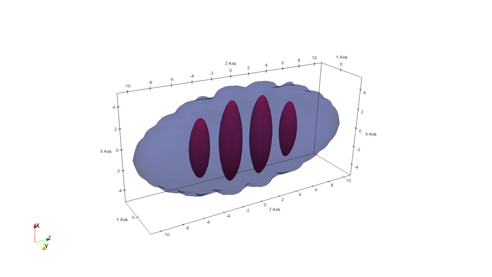

- Author
- Santo Maria Roccuzzo (santo.nosp@m.m.ro.nosp@m.ccuzz.nosp@m.o@gm.nosp@m.ail.c.nosp@m.om)
Excitation spectrum of a trapped dipolar Bose-Einstein condensate across the superfluid-supersolid
phase transition.
Introduction
In this example, we are going to use UltraCold to study the elementary excitations of a three-dimensional, harmonically trapped dipolar Bose gas of \( ^{164}Dy \) atoms, using the solver class UltraCold::BogolyubovSolvers::TrappedDipolarBogolyubovSolver, and across the superfluid-supersolid phase transition.
As explained in example-2, in order to calculate the spectrum of elementary excitations on top of a certain stationary solution of the GPe, it is necessary to search for solutions of the time-dependent GPe of the form
\[
\psi({\bf r},t) = e^{-i\frac{\mu}{\hbar}t}\left[ \psi_0({\bf r})
+ \sum_{n=0}^{\infty} \left( u_n({\bf r})e^{-i\omega_n t} + v^*_n({\bf r})e^{i\omega_n t} \right) \right]
\]
and solve the eigenvalue problem that comes out by keeping only terms linear in the quasi-particle amplitudes \( u \) and \( v \). In the case of a dipolar Bose gas, taking also into account the effects of quantum fluctuations via the Lee-Huang-Yang (LHY) correction, this amounts to solving the following eigenvalue problem
\[
\begin{bmatrix}
u \\
v
\end{bmatrix}
=
\begin{bmatrix}
\hat{H}-\mu+\hat{X} & \hat{X}^\dagger \\
-\hat{X} & -(\hat{H}-\mu+\hat{X}^\dagger)
\end{bmatrix}
\begin{bmatrix}
u \\
v
\end{bmatrix}
\]
with
\[
\begin{align}
\mathcal{H}({\bf r})=-&\frac{\hbar^2}{2m}\nabla^2+V_{\rm ext}({\bf r})+g|\Psi({\bf r},t)|^2+\gamma
(\varepsilon_{dd})|\Psi({\bf r},t)|^3\nonumber\\
+& \int d{\bf r'}V_{dd}({\bf r}-{\bf r'})|\Psi({\bf r'},t)|^2\,,
\end{align}
\]
and
\[
\hat{X}f({\bf r}) = \psi_0({\bf r})\int d{\bf r}' V_{dd}({\bf r}-{\bf r}')f({\bf r}')\psi_0^*({\bf r}') +
\frac{3}{2}\gamma(\varepsilon_{dd})|\psi_0({\bf r})|^3f({\bf r})
\]
and finally
\[
\gamma(\varepsilon_{dd})=\frac{16}{3\sqrt{\pi}} ga^{\frac{3}{2}}\,\mbox{Re}\bigg[\!\int_0^{\pi}
\!\!\!\!d\theta\sin\theta [1+\varepsilon_{dd}(3\cos^2\theta-1)]^{\frac{5}{2}}\bigg]\,.
\]
with \( g=4\pi\hbar^2a/m \) the coupling constant fixed by the \( s \)-wave scattering length \( a
\), \( V_{dd}({\bf r}_{i}-{\bf r}_{j})=\frac{\mu_0\mu^2}{4\pi}\frac{1-3\cos^2\theta}{|{\bf r}_{i}-{\bf
r}_{j}|^3} \) the dipole-dipole potential, being \( \mu_0 \) the magnetic permeability in vacuum, \(
\mu \) the magnetic dipole moment and \( \theta \) the angle between the vector distance between dipoles and the polarization direction, which we choose as the \( x \)-axis, and \( \varepsilon_{dd}=\mu_0\mu^2/(3g)=a_{dd}/a \) the ratio between the strength of the dipolar and the contact interaction, eventually written in terms of the dipolar length \( a_{dd} \) and the scattering length \( a \).
In the case in which the condensate wave function is real (e.g., in absence of vortices, solitons...) the problem can be recast in a more convenient form. In fact, taking the sum and the difference between the two equations, one easily finds
\[
\begin{align}
& (\hat{H}-\mu)(\hat{H}-\mu+2\hat{X}) (u+v) = (\hbar\omega)^2 (u+v) \nonumber \\
& (\hat{H}-\mu+2\hat{X})(\hat{H}-\mu) (u-v) = (\hbar\omega)^2 (u-v) \nonumber \\
\end{align}
\]
Now, both equations allow to find the (square) of the energy of the Bogolyubov modes, but solving a system of half the dimensionality of the original problem. This typically allows a great saving of computational time. The eigenvectors of the two problems correspond to \((u+v)\) and \((u-v)\) respectively, so that if one is interested in finding the Bogolyubov quasi-particle amplitudes \( u \) and \( v \), one also needs to solve the second problem, and then set \( u = 0.5 \left( (u+v) + (u-v) \right)\) and \( v = 0.5 \left( (u+v) - (u-v) \right)\)
This class solves the eigenvalue problem using the matrix-free routines provided as part of the package arpack-ng , which is distributed as a bundled package with UltraCold.
Program description
As always, we first create an input file containing our mesh and physical parameters, as well as other parameters determining the run-time behavior of the system. Such input file will be called example-4.prm and contain the following text
# Mesh parameters
xmax = 20.0 # Size of the mesh along the x-axis, in micrometers. The mesh will extend from -xmax to xmax
ymax = 10.0 # Size of the mesh along the y-axis, in micrometers. The mesh will extend from -ymax to ymax
zmax = 20.0 # Size of the mesh along the z-axis, in micrometers. The mesh will extend from -zmax to zmax
nx = 48 # Number of points along the x-axis
ny = 48 # Number of points along the y-axis
nz = 256 # Number of points along the z-axis
# Physical parameters
scattering length = 95.0
dipolar_length = 132.0 # Dipolar length in units of the Bohr radius
number of particles = 40000 # Total number of atoms
atomic mass = 164 # Atomic mass, in atomic mass units
omegax = 110 # Harmonic frequency along the x-axis, in units of (2pi)Hz
omegay = 90 # Harmonic frequency along the y-axis, in units of (2pi)Hz
omegaz = 30 # Harmonic frequency along the z-axis, in units of (2pi)Hz
# Run parameters for gradient descent
number of gradient descent steps = 200000 # maximum number of gradient descent steps
residual = 1.E-12 # Threshold on the norm of the residual
alpha = 1.E-3 # gradient descent step
beta = 0.9 # step for the heavy-ball acceleration method
# Run parameters for Bogolyubov equations
number of modes = 50
calculate eigenvectors = true
tolerance = 1.E-8
maximum number of arnoldi iterations = 10000
We read the input file as usual using the class Tools::InputParser , set harmonic units, create a mesh and set the initial wave function and external potential for the calculation of the stationary state of the system, on top of which we are going to calculate the elementary excitations. Using the parameters above, such ground state is going to be a supersolid state.
#include "UltraCold.hpp"
#include <random>
int main()
{
ip.read_input_file();
double xmax = ip.retrieve_double("xmax");
double ymax = ip.retrieve_double("ymax");
double zmax = ip.retrieve_double("zmax");
const int nx = ip.retrieve_int("nx");
const int ny = ip.retrieve_int("ny");
const int nz = ip.retrieve_int("nz");
double scattering_length = ip.retrieve_double("scattering length");
double dipolar_length = ip.retrieve_double("dipolar_length");
const int number_of_particles = ip.retrieve_int("number of particles");
const double atomic_mass = ip.retrieve_double("atomic mass");
double omegax = ip.retrieve_double("omegax");
double omegay = ip.retrieve_double("omegay");
double omegaz = ip.retrieve_double("omegaz");
const int number_of_gradient_descent_steps = ip.retrieve_int("number of gradient descent steps");
const double residual = ip.retrieve_double("residual");
const double alpha = ip.retrieve_double("alpha");
const double beta = ip.retrieve_double("beta");
const int number_of_modes = ip.retrieve_int("number of modes");
const int maximum_number_arnoldi_iterations = ip.retrieve_int("maximum number of arnoldi iterations");
const double tolerance = ip.retrieve_double("tolerance");
const bool calculate_eigenvectors = ip.retrieve_bool("calculate eigenvectors");
const double hbar = 0.6347*1.E5;
const double bohr_radius = 5.292E-5;
omegax *= TWOPI;
omegay *= TWOPI;
omegaz *= TWOPI;
const double omega_ho = std::cbrt(omegax*omegay*omegaz);
omegax = omegax/omega_ho;
omegay = omegay/omega_ho;
omegaz = omegaz/omega_ho;
const double a_ho = std::sqrt(hbar/(atomic_mass*omega_ho));
scattering_length *= bohr_radius/a_ho;
dipolar_length *= bohr_radius/a_ho;
xmax = xmax/a_ho;
ymax = ymax/a_ho;
zmax = zmax/a_ho;
double dx = 2 * xmax / nx;
double dy = 2 * ymax / ny;
double dz = 2 * zmax / nz;
for (int i = 0; i < nx; ++i) x[i] = -xmax + i * dx;
for (int i = 0; i < ny; ++i) y[i] = -ymax + i * dy;
for (int i = 0; i < nz; ++i) z[i] = -zmax + i * dz;
create_mesh_in_Fourier_space(x, y, z, kx, ky, kz);
std::default_random_engine generator;
std::uniform_real_distribution<double> distribution(0,1);
for (int i = 0; i < nx; ++i)
for (int j = 0; j < ny; ++j)
for (int k = 0; k < nz; ++k)
{
double random_number = distribution(generator);
psi(i,j,k) = (1.0+0.1*random_number)*
std::exp(-0.1*(pow(x(i),2) +
pow(y(j),2) +
pow(z(k),2)) );
Vext(i,j,k) = 0.5*( std::pow(omegax,2)*pow(x(i),2) +
std::pow(omegay,2)*pow(y(j),2) +
std::pow(omegaz,2)*pow(z(k),2) );
}
double norm = 0.0;
for (size_t i = 0; i < psi.size(); ++i) norm += std::norm(psi[i]);
norm *= (dx * dy * dz);
for (size_t i = 0; i < psi.size(); ++i) psi[i] *= std::sqrt(number_of_particles / norm);
A class to output a data Vector in real space.
Definition: DataWriter.hpp:71
void set_output_name(const std::string &output_file_name)
Set the name for the output data file, input as an std::string.
Definition: DataWriter.cpp:31
void write_slice2d_vtk(Vector< double > &ax1, Vector< double > &ax2, Vector< double > &real_output_vector, const char *vector_name, const char *plane, const char *format)
Write an output data file in .vtk format, for 2D slice of real 3D Vector.
Definition: DataWriter.cpp:1236
All the classes and functions necessary to work with UltraCold.
Definition: BogolyubovSolver.cpp:25
So, we calculate the ground state of the system using the class GPSolvers::DipolarGPSolver
y,
z,
psi,
Vext,
scattering_length,
dipolar_length);
double chemical_potential;
std::tie(psi, chemical_potential) = dipolar_gp_solver.run_gradient_descent(number_of_gradient_descent_steps,
residual,
alpha,
beta,
std::cout);
psi_out.
write_vtk(x,y,z,psi,
"ground_state_wave_function",
"BINARY");
Class to solve the Gross-Pitaevskii equation for a dipolar Bose gas in two or three space dimensions.
Definition: GPSolvers.hpp:467
void write_vtk(Vector< double > &x_axis, Vector< double > &y_axis, Vector< double > &real_output_vector, const char *vector_name, const char *format)
Write an output data file in .vtk format, for real 2D output.
Definition: DataWriter.cpp:805
We can now plug the calculated ground-state solution \( \psi_0 \) to the class UltraCold::BogolyubovSolvers::TrappedDipolarBogolyubovSolver, which will calculate for us the energies of the elementary excitations of the system as well as the Bogolyubov amplitudes \( u \) and \( v \). Since we are considering a simple solution of the GPe, without any topological defect like solitons or vortices, the ground-state wave function, despite being defined as a complex Vector, will have only a non-zero real part. We can thus simplify the Bogolyubov equations solving only eigen-problems of halved dimensionality. The class UltraCold::BogolyubovSolvers::TrappedDipolarBogolyubovSolver will do this automatically for us, provided that we feed a real Vector, representing the ground-state wave function, to its constructor. We thus first copy the calculated ground-state wave-function into a real-valued Vector
for (int i = 0; i < nx * ny * nz; ++i)
psi_real[i] = psi[i].real();
then initialize the data structures that will contain the solutions of the Bogolyubov equations
std::vector<std::complex<double>> eigenvalues(number_of_modes);
std::vector<Vector<std::complex<double>>> u(number_of_modes),v(number_of_modes);
and, finally, create our solver class and run the solver
y,
z,
psi_real,
Vext,
scattering_length,
dipolar_length,
chemical_potential,
number_of_modes,
tolerance,
maximum_number_arnoldi_iterations,
calculate_eigenvectors);
std::tie(eigenvalues,u,v) = dipolar_bogolyubov_solver.run();
Class to solve the Bogolyubov equations for a trapped dipolar Bose gas.
Definition: BogolyubovSolvers.hpp:359
In the context of Bogolyubov theory, several interesting properties can be extracted from the knowledge of \( u \) and \( v \). For example, one can see the density and phase fluctuations associated with each eigen-mode, by looking, respectively, at the quantities
\[
\begin{align}
& \delta n({\bf r}) = (u({\bf r}) + v({\bf r}))\psi_0({\bf r}) \nonumber \\
& \delta \phi({\bf r}) = (u({\bf r}) - v({\bf r}))/\psi_0({\bf r}) \nonumber \\
\end{align}
\]
This is exactly what we calculate and output into some .vtk files with the last lines of the example. Notice that we also print to the screen the expected frequencies of the center-of-mass oscillations of the system, which in the case of harmonic trapping coincide with the harmonic frequencies of the trap (they will, of course, be printed in units of their geometric average). This is a useful test of the accuracy of the calculation. If the calculations were accurate, one must find such three frequencies in the calculated energy spectrum.
std::vector<Vector< std::complex<double> >> density_fluctuations(number_of_modes);
std::vector<Vector< std::complex<double> >> phase_fluctuations(number_of_modes);
std::cout << "----------------------------------" << std::endl;
std::cout << "Expected dipole mode frequencies: " << std::endl;
std::cout << omegax << " " << omegay << " " << omegaz << std::endl;
std::cout << "----------------------------------" << std::endl;
for (int i = 0; i < number_of_modes; ++i)
{
std::cout << eigenvalues[i].real() << " " << eigenvalues[i].imag() << std::endl;
if(calculate_eigenvectors)
{
density_fluctuations[i].reinit(nx,ny,nz);
phase_fluctuations[i].reinit(nx,ny,nz);
for (int j = 0; j < nx*ny*nz; ++j)
{
density_fluctuations[i](j) = (u[i](j) + v[i](j)) * psi_real(j);
phase_fluctuations[i](j) = (u[i](j) - v[i](j)) / psi_real(j);
}
output_fluctuations.
set_output_name(
"density_fluctuations_mode_" + std::to_string(i));
output_fluctuations.
write_vtk(x,y,z,density_fluctuations[i],
"density_fluctuations",
"BINARY");
output_fluctuations.
set_output_name(
"phase_fluctuations_mode_" + std::to_string(i));
output_fluctuations.
write_vtk(x,y,z,phase_fluctuations[i],
"phase_fluctuations",
"BINARY");
}
}
return 0;
}
Results
It is first interesting to get a look at the calculated ground-state wave function. As said, with the parameters used here, it corresponds to a supersolid state, as we can see from the three-dimensional density contours

The output of the program related to the (first) calculated eigenvalues, corresponding to the energies of the Bogolyubov modes in units of \( \hbar \omega_{ho} \), is the following:
--------------------------------------
Expected dipole-mode frequencies:
1.6487 1.34893 0.449644
--------------------------------------
7.35959e-06 0
0.0990846 0
0.290267 0
0.388278 0
0.449645 0
0.564145 0
0.569203 0
0.772583 0
0.993786 0
1.01476 0
1.01743 0
1.08948 0
1.09409 0
1.18436 0
1.2107 0
1.30721 0
1.31027 0
1.34772 0
1.5384 0
1.54054 0
1.58407 0
1.60403 0
1.61188 0
1.62087 0
1.66431 0
1.66592 0
1.67126 0
1.6948 0
Notice that we catch well the two lowest dipole frequencies, and a little less well the higher energy one. This is not too much surprising, however, since at high energies even the dipole mode can be slightly affected by the other modes of comparable energy. It is also interesting to have a look at how the excitation spectrum changes when we tune the dipolar parameter \( \varepsilon_{dd}=\mu_0\mu^2/(3g)=a_{dd}/a \). The results look like the following
- Note
- Since Bogolyubov calculations in three space dimensions are numerically very demanding, most of the calculations required to obtain the results presented in this example have been done on the High Performance Computing cluster Galileo100 of the Italian supercomputing consortium CINECA .
Possible extensions
One can use the calculated Bogolyubov amplitudes \(u\) and \(v\), as well as the calculated density and phase fluctuations, to study for example the dynamic structure factor of the system, which describes the response of the system to small density probes, or the "character" of the modes, i.e. if a certain mode has mainly a density or a phase character. These kind of studies have led, in recent years, to several interesting publications, see for example Nature volume 574, pages 382–385 (2019) , Nature volume 574, pages 386–389 (2019) , and Phys. Rev. Lett. 123, 050402 (2019)
The plain program
#include "UltraCold.hpp"
#include <random>
int main()
{
ip.read_input_file();
double xmax = ip.retrieve_double("xmax");
double ymax = ip.retrieve_double("ymax");
double zmax = ip.retrieve_double("zmax");
const int nx = ip.retrieve_int("nx");
const int ny = ip.retrieve_int("ny");
const int nz = ip.retrieve_int("nz");
double scattering_length = ip.retrieve_double("scattering length");
double dipolar_length = ip.retrieve_double("dipolar_length");
const int number_of_particles = ip.retrieve_int("number of particles");
const double atomic_mass = ip.retrieve_double("atomic mass");
double omegax = ip.retrieve_double("omegax");
double omegay = ip.retrieve_double("omegay");
double omegaz = ip.retrieve_double("omegaz");
const int number_of_gradient_descent_steps = ip.retrieve_int("number of gradient descent steps");
const double residual = ip.retrieve_double("residual");
const double alpha = ip.retrieve_double("alpha");
const double beta = ip.retrieve_double("beta");
const int number_of_modes = ip.retrieve_int("number of modes");
const int maximum_number_arnoldi_iterations = ip.retrieve_int("maximum number of arnoldi iterations");
const double tolerance = ip.retrieve_double("tolerance");
const bool calculate_eigenvectors = ip.retrieve_bool("calculate eigenvectors");
const double hbar = 0.6347*1.E5;
const double bohr_radius = 5.292E-5;
omegax *= TWOPI;
omegay *= TWOPI;
omegaz *= TWOPI;
const double omega_ho = std::cbrt(omegax*omegay*omegaz);
omegax = omegax/omega_ho;
omegay = omegay/omega_ho;
omegaz = omegaz/omega_ho;
const double a_ho = std::sqrt(hbar/(atomic_mass*omega_ho));
scattering_length *= bohr_radius/a_ho;
dipolar_length *= bohr_radius/a_ho;
xmax = xmax/a_ho;
ymax = ymax/a_ho;
zmax = zmax/a_ho;
double dx = 2 * xmax / nx;
double dy = 2 * ymax / ny;
double dz = 2 * zmax / nz;
for (int i = 0; i < nx; ++i) x[i] = -xmax + i * dx;
for (int i = 0; i < ny; ++i) y[i] = -ymax + i * dy;
for (int i = 0; i < nz; ++i) z[i] = -zmax + i * dz;
create_mesh_in_Fourier_space(x, y, z, kx, ky, kz);
std::default_random_engine generator;
std::uniform_real_distribution<double> distribution(0,1);
for (int i = 0; i < nx; ++i)
for (int j = 0; j < ny; ++j)
for (int k = 0; k < nz; ++k)
{
double random_number = distribution(generator);
psi(i,j,k) = (1.0+0.1*random_number)*
std::exp(-0.1*(pow(x(i),2) +
pow(y(j),2) +
pow(z(k),2)) );
Vext(i,j,k) = 0.5*( std::pow(omegax,2)*pow(x(i),2) +
std::pow(omegay,2)*pow(y(j),2) +
std::pow(omegaz,2)*pow(z(k),2) );
}
double norm = 0.0;
for (size_t i = 0; i < psi.size(); ++i) norm += std::norm(psi[i]);
norm *= (dx * dy * dz);
for (size_t i = 0; i < psi.size(); ++i) psi[i] *= std::sqrt(number_of_particles / norm);
y,
z,
psi,
Vext,
scattering_length,
dipolar_length);
double chemical_potential;
std::tie(psi, chemical_potential) = dipolar_gp_solver.run_gradient_descent(number_of_gradient_descent_steps,
residual,
alpha,
beta,
std::cout);
psi_out.
write_vtk(x,y,z,psi,
"ground_state_wave_function",
"BINARY");
for (int i = 0; i < nx * ny * nz; ++i)
psi_real[i] = psi[i].real();
std::vector<std::complex<double>> eigenvalues(number_of_modes);
std::vector<Vector<std::complex<double>>> u(number_of_modes),v(number_of_modes);
y,
z,
psi_real,
Vext,
scattering_length,
dipolar_length,
chemical_potential,
number_of_modes,
tolerance,
maximum_number_arnoldi_iterations,
calculate_eigenvectors);
std::tie(eigenvalues,u,v) = dipolar_bogolyubov_solver.run();
std::vector<Vector< std::complex<double> >> density_fluctuations(number_of_modes);
std::vector<Vector< std::complex<double> >> phase_fluctuations(number_of_modes);
std::cout << "----------------------------------" << std::endl;
std::cout << "Expected dipole mode frequencies: " << std::endl;
std::cout << omegax << " " << omegay << " " << omegaz << std::endl;
std::cout << "----------------------------------" << std::endl;
for (int i = 0; i < number_of_modes; ++i)
{
std::cout << eigenvalues[i].real() << " " << eigenvalues[i].imag() << std::endl;
if(calculate_eigenvectors)
{
density_fluctuations[i].reinit(nx,ny,nz);
phase_fluctuations[i].reinit(nx,ny,nz);
for (int j = 0; j < nx*ny*nz; ++j)
{
density_fluctuations[i](j) = (u[i](j) + v[i](j)) * psi_real(j);
phase_fluctuations[i](j) = (u[i](j) - v[i](j)) / psi_real(j);
}
output_fluctuations.
set_output_name(
"density_fluctuations_mode_" + std::to_string(i));
output_fluctuations.
write_vtk(x,y,z,density_fluctuations[i],
"density_fluctuations",
"BINARY");
output_fluctuations.
set_output_name(
"phase_fluctuations_mode_" + std::to_string(i));
output_fluctuations.
write_vtk(x,y,z,phase_fluctuations[i],
"phase_fluctuations",
"BINARY");
}
}
return 0;
}